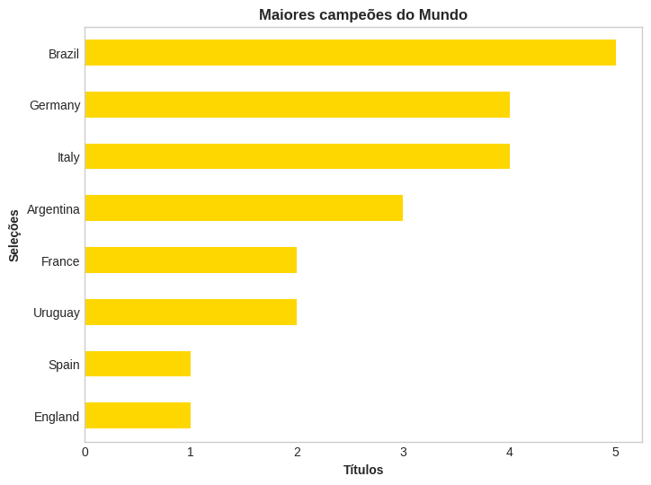
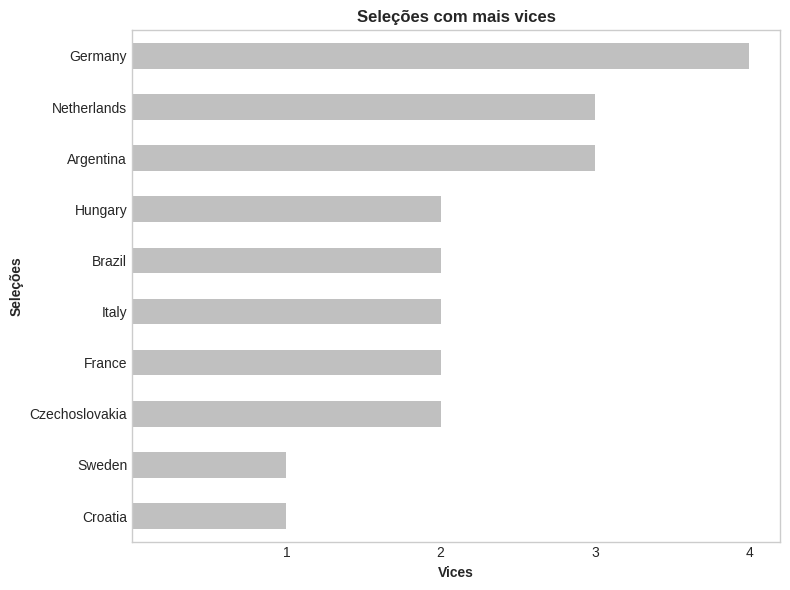
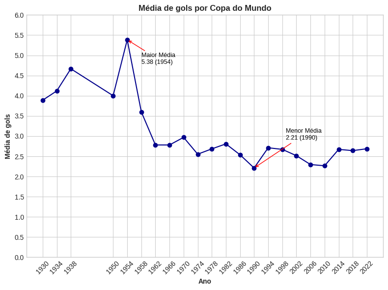
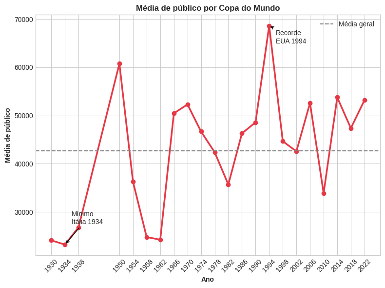
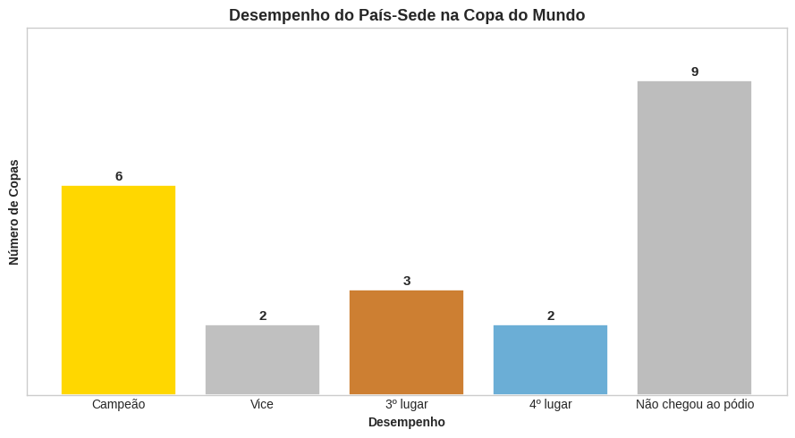

Análise Exploratória sobre as Edições da Copa do Mundo
Explorando 22 edições do maior torneio de futebol do planeta para entender padrões de títulos, o "fator casa" e a evolução tática do jogo ao longo de quase um século.
01 Contexto do Problema
A Copa do Mundo é disputada desde 1930 e acumula quase um século de histórico. Apesar de ser amplamente comentada, boa parte dessa informação está espalhada e pouco estruturada. O objetivo deste projeto foi consolidar os dados de todas as edições do torneio em uma única base para responder perguntas concretas: quais seleções realmente dominam o cenário mundial? Jogar em casa é, de fato, uma vantagem? A média de gols por partida mudou ao longo das décadas? E qual edição teve o maior público da história?
02 Dados Utilizados
A base (worldcups_atualizado.csv) reúne uma linha para cada uma das 22 edições da
Copa do Mundo, com colunas de ano, país-sede, campeão, vice-campeão, terceiro e quarto colocados,
total de gols marcados, número de seleções participantes, número de jogos disputados e público total.
03 Processo de Limpeza e EDA
O processo começou com uma inspeção geral da base usando df.info(),
df.isnull().sum() e df.describe(), para confirmar tipos de dados e
garantir que não havia valores ausentes.
Um ponto de atenção identificado foi que a Alemanha aparecia registrada de duas formas diferentes no histórico ("West Germany" e "Germany"), o que distorceria a contagem de títulos por seleção. Esse problema foi corrigido consolidando os dois nomes em um único rótulo:
- Padronização de nomes de seleção (
df.replace({'West Germany': 'Germany'})), unificando o histórico alemão. - Contagem de frequência com
value_counts()para campeões, vices e países-sede. - Criação de métricas derivadas: média de gols por jogo (
goals_scored / games) e média de público por jogo (attendance / games). - Criação de uma função customizada (
desempenho_sede) para classificar, em cada edição, se o país-sede terminou como campeão, vice, 3º, 4º lugar ou fora do pódio.
A partir desses dados tratados, os principais gráficos foram construídos com Matplotlib para visualizar tendências de título, gols e público ao longo do tempo.
04 Decisões Tomadas
Para o ranking de campeões e vice-campeões, optei por gráficos de barras horizontais
(barh), que facilitam a leitura de nomes de países longos sem sobrepor rótulos.
Ranking das seleções com mais títulos de Copa do Mundo.

Ranking das seleções com mais vices de Copa do Mundo.

Para a evolução da média de gols e da média de público ao longo dos anos, usei gráficos de
linha — a melhor forma de representar uma tendência temporal — com anotações (plt.annotate)
destacando os pontos de máximo e mínimo de cada métrica, para tornar os extremos históricos
imediatamente visíveis sem precisar consultar a tabela.
Média de gols por partida ao longo das edições da Copa do Mundo, com destaque para o maior e o menor valor histórico.

Média de público por partida ao longo das edições da Copa do Mundo, com destaque para o maior e o menor valor histórico.

Já para investigar o "fator casa", criei uma função própria que classifica o desempenho do país-sede em cada edição (campeão, vice, 3º, 4º lugar ou fora do pódio) e visualizei o resultado em um gráfico de barras coloridas por posição, facilitando a leitura da frequência de cada resultado.
Desempenho do país-sede em cada edição da Copa do Mundo.

05 Resultado e Insight Final
O Brasil se confirmou como a seleção com mais títulos da história (5), embora esteja sem vencer desde 2002 — a Alemanha vem logo atrás, com 4 títulos, sendo o último em 2014, justamente em solo brasileiro.
O "fator casa" se mostrou historicamente relevante: seleções tradicionais como Uruguai, Itália, Inglaterra, Alemanha, Argentina e França conquistaram o título jogando diante de sua própria torcida, reforçando a vantagem competitiva de sediar o torneio.
Do ponto de vista tático, ficou evidente uma queda expressiva na média de gols por partida a partir dos anos 2000 — o pico histórico foi em 1954 (5,38 gols/jogo) e o menor valor em 1990 (2,21 gols/jogo) — refletindo a crescente profissionalização e o rigor defensivo do futebol moderno.
Por fim, a Copa de 1994, nos Estados Unidos, segue como o maior evento em público médio por jogo da história do torneio, enquanto a Copa de 1934, na Itália, registrou o menor público médio.
Esse projeto reforça como dados históricos bem tratados — mesmo em uma base relativamente simples — revelam padrões estruturais (dominância, vantagem de mando de campo, evolução tática) que não são óbvios à primeira vista, e é esse tipo de raciocínio analítico que pretendo aplicar em contextos de negócio.